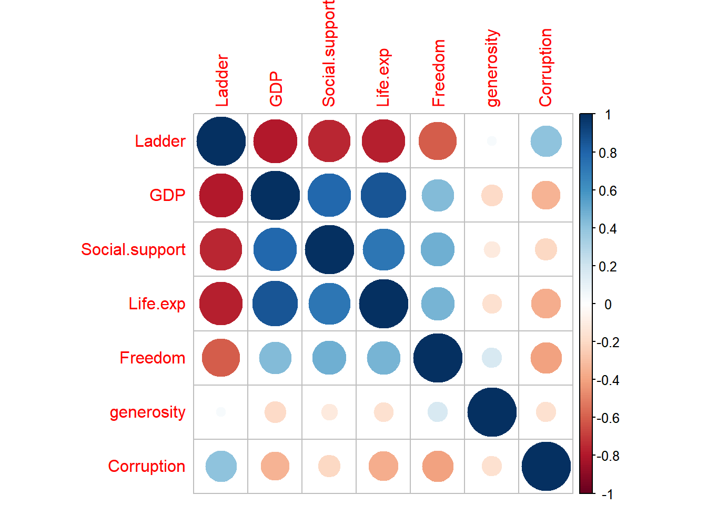
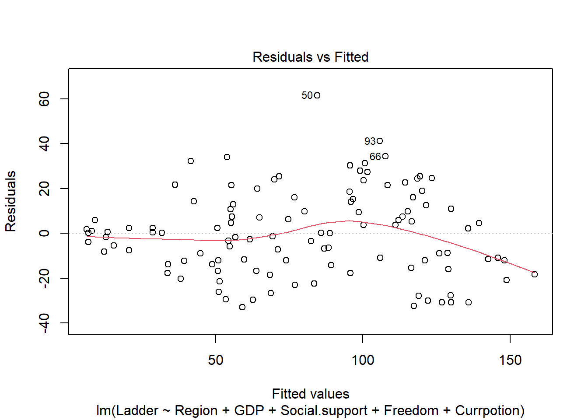
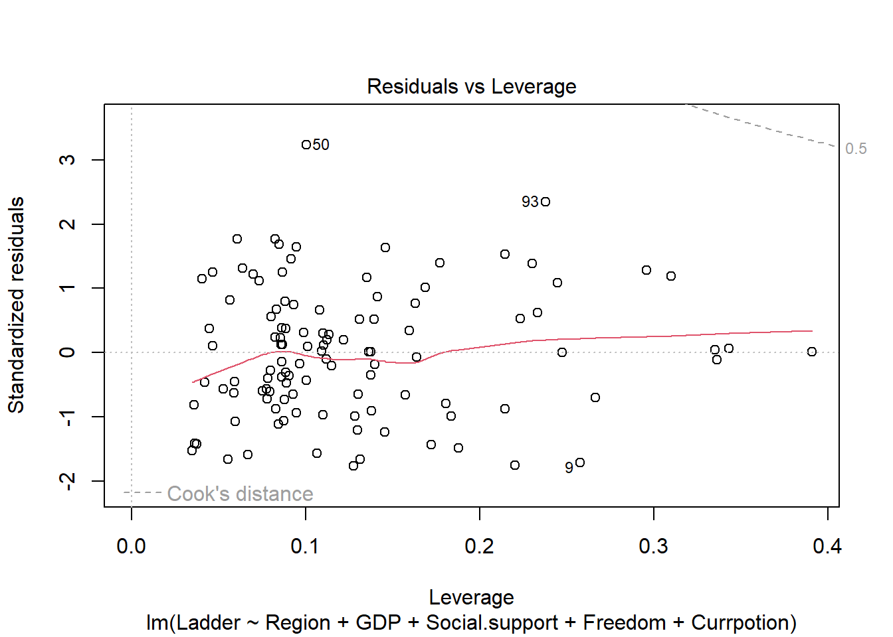
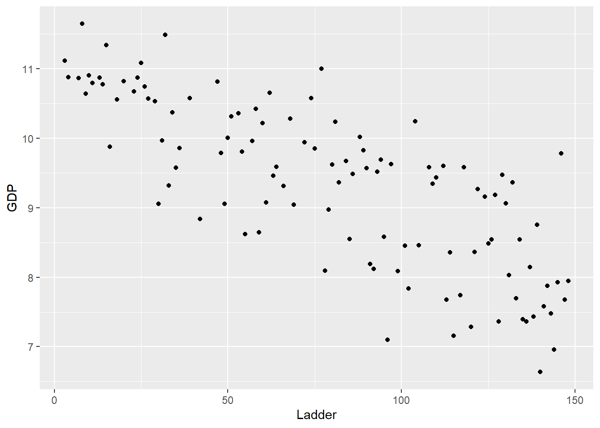
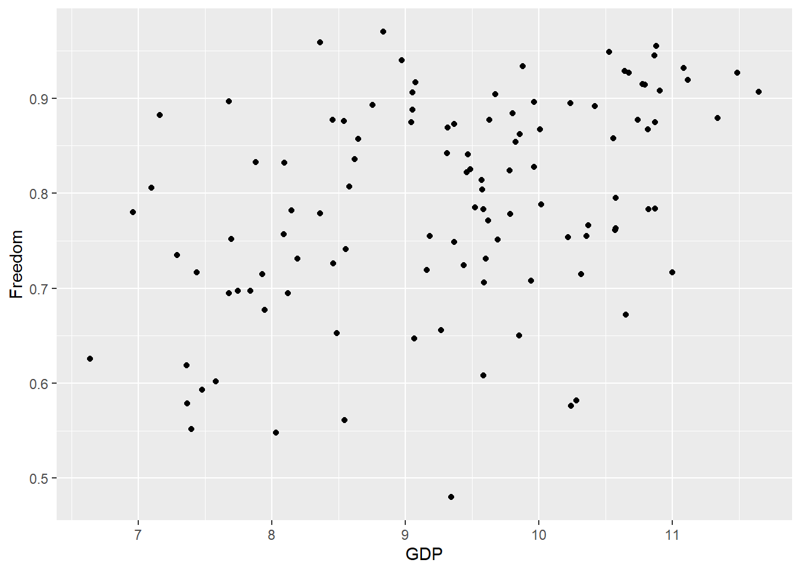
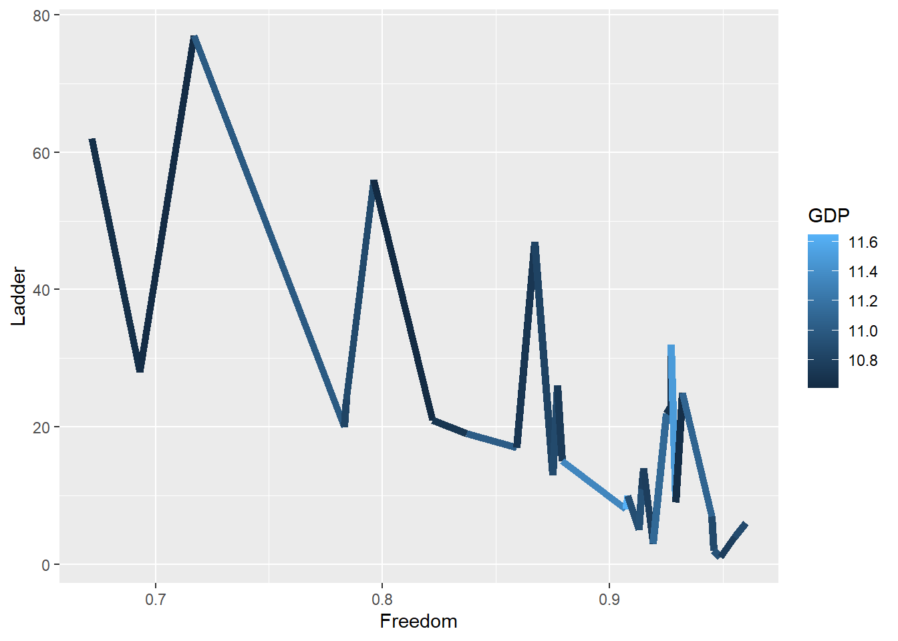
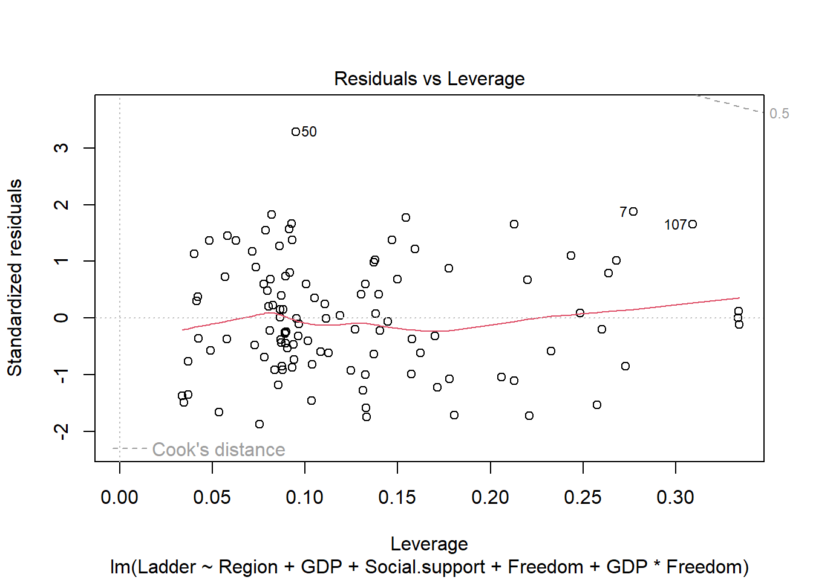
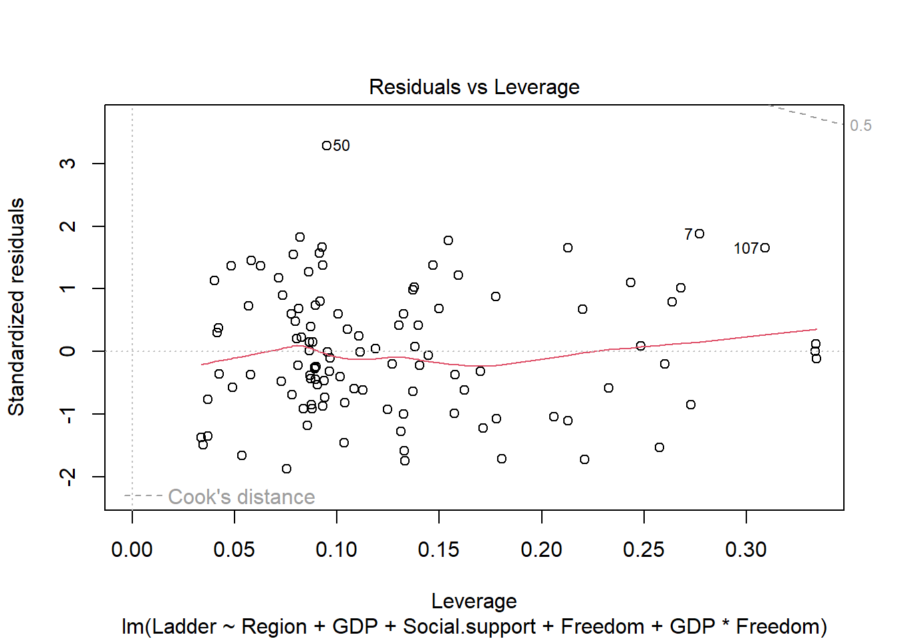

Regression analysis
Jingya Yu
2022-12-04
library(readr)
library(dplyr)##
## Attaching package: 'dplyr'## The following objects are masked from 'package:stats':
##
## filter, lag## The following objects are masked from 'package:base':
##
## intersect, setdiff, setequal, unionlibrary(corrplot)## corrplot 0.92 loadedlibrary(ggplot2)
library(MASS)##
## Attaching package: 'MASS'## The following object is masked from 'package:dplyr':
##
## selectlibrary(faraway)Here I am interested in which features best predict the outcome - Ladder Score. I am considering a multiple linear regression to see how variables relate to the outcome. Once important question that I am interested in is how much does GDP impacts the Ladder Score.
regression data import
regression_df =
read_csv("data/world-happiness-report-2021.csv") %>%
janitor::clean_names()
head(regression_df)## # A tibble: 6 × 20
## country_name regiona…¹ ladde…² stand…³ upper…⁴ lower…⁵ logge…⁶ socia…⁷ healt…⁸
## <chr> <chr> <dbl> <dbl> <dbl> <dbl> <dbl> <dbl> <dbl>
## 1 Finland Western … 7.84 0.032 7.90 7.78 10.8 0.954 72
## 2 Denmark Western … 7.62 0.035 7.69 7.55 10.9 0.954 72.7
## 3 Switzerland Western … 7.57 0.036 7.64 7.5 11.1 0.942 74.4
## 4 Iceland Western … 7.55 0.059 7.67 7.44 10.9 0.983 73
## 5 Netherlands Western … 7.46 0.027 7.52 7.41 10.9 0.942 72.4
## 6 Norway Western … 7.39 0.035 7.46 7.32 11.1 0.954 73.3
## # … with 11 more variables: freedom_to_make_life_choices <dbl>,
## # generosity <dbl>, perceptions_of_corruption <dbl>,
## # ladder_score_in_dystopia <dbl>, explained_by_log_gdp_per_capita <dbl>,
## # explained_by_social_support <dbl>,
## # explained_by_healthy_life_expectancy <dbl>,
## # explained_by_freedom_to_make_life_choices <dbl>,
## # explained_by_generosity <dbl>, …variable description
Ladder Score or Happiness Score: “Please imagine a ladder, with steps numbered from 0 at the bottom to 10 at the top. The top of the ladder represents the best possible life for you and the bottom of the ladder represents the worst possible life for you. On which step of the ladder would you say you personally feel you stand at this time?”.
Log GDP per capita: It is the total monetary or market value of all the finished goods and services produced within a country’s borders in a specific time period.
Healthy life expectancy: Based on the data extracted from the World Health Organization’s (WHO)
Social Suport: “If you were in trouble, do you have relatives or friends you can count on to help you whenever you need them, or not?”.
Freedom to make life choices: “Are you satisfied or dissatisfied with your freedom to choose what you do with your life?”
Generosity: “Have you donated money to a charity in the past month?” on GDP per capita.
Corruption Perception: “Is corruption widespread throughout the government or not” and “Is corruption widespread within businesses or not?”
change column names and check if there is na
regression_df$country_name <- as.factor(regression_df$country_name)
regression_df$regional_indicator<- as.factor(regression_df$regional_indicator)
regression_df <- regression_df %>%
rename(Country = country_name, Region = regional_indicator, Ladder = ladder_score,
SD.Ladder = standard_error_of_ladder_score, GDP = logged_gdp_per_capita, Social.support = social_support,
Life.exp = healthy_life_expectancy, Freedom = freedom_to_make_life_choices,
Currpotion = perceptions_of_corruption, Ladder.Dystopia = ladder_score_in_dystopia,
EXP.LOG.GPD = explained_by_log_gdp_per_capita, EXP.SS = explained_by_social_support,
EXP.HLE = explained_by_healthy_life_expectancy, EXP.FREE = explained_by_freedom_to_make_life_choices,
EXP.GEN = explained_by_generosity, EXP.CUR = explained_by_perceptions_of_corruption,
DYS.RES = dystopia_residual)
hap <- regression_df[,-c(4,5,6,13:20)]
colnames(hap)## [1] "Country" "Region" "Ladder" "GDP"
## [5] "Social.support" "Life.exp" "Freedom" "generosity"
## [9] "Currpotion"hap <- hap %>%
mutate(Ladder = row_number())
head(hap)## # A tibble: 6 × 9
## Country Region Ladder GDP Socia…¹ Life.…² Freedom gener…³ Currp…⁴
## <fct> <fct> <int> <dbl> <dbl> <dbl> <dbl> <dbl> <dbl>
## 1 Finland Western Euro… 1 10.8 0.954 72 0.949 -0.098 0.186
## 2 Denmark Western Euro… 2 10.9 0.954 72.7 0.946 0.03 0.179
## 3 Switzerland Western Euro… 3 11.1 0.942 74.4 0.919 0.025 0.292
## 4 Iceland Western Euro… 4 10.9 0.983 73 0.955 0.16 0.673
## 5 Netherlands Western Euro… 5 10.9 0.942 72.4 0.913 0.175 0.338
## 6 Norway Western Euro… 6 11.1 0.954 73.3 0.96 0.093 0.27
## # … with abbreviated variable names ¹Social.support, ²Life.exp, ³generosity,
## # ⁴Currpotionsum(is.na(regression_df)) # there is no na## [1] 0Now, I would like to check the correlations between each of the variables. In order to use use the cor() function, the variables need to be numeric. I use the select_if() function on the hap dataframe and select the data that is numeric.
Then we print the correlation matrix and plot the correlation graph.
num.var <- select_if(hap, is.numeric)
M<-cor(num.var)
M## Ladder GDP Social.support Life.exp Freedom
## Ladder 1.00000000 -0.7969875 -0.7510240 -0.7759416 -0.6064113
## GDP -0.79698747 1.0000000 0.7852987 0.8594606 0.4323235
## Social.support -0.75102401 0.7852987 1.0000000 0.7232561 0.4829298
## Life.exp -0.77594156 0.8594606 0.7232561 1.0000000 0.4614939
## Freedom -0.60641135 0.4323235 0.4829298 0.4614939 1.0000000
## generosity 0.03966234 -0.1992864 -0.1149459 -0.1617503 0.1694374
## Currpotion 0.40065425 -0.3423374 -0.2032070 -0.3643735 -0.4013630
## generosity Currpotion
## Ladder 0.03966234 0.4006543
## GDP -0.19928640 -0.3423374
## Social.support -0.11494585 -0.2032070
## Life.exp -0.16175028 -0.3643735
## Freedom 0.16943737 -0.4013630
## generosity 1.00000000 -0.1639617
## Currpotion -0.16396173 1.0000000corrplot(M)
Split the data into a training and validation set.
#Data Partitioning
set.seed(10)
#select sample size of training data (75% of data for train, 25% for validation)
sample_size <- floor(0.75 * nrow(hap))
# using sample() to select sample of specific size without replacement
# seq_len() generates a regular sequence - defined here as nrow (number of rows) of our data
# size is setting how large the sequence is (111)
train_ind <- sample(seq_len(nrow(hap)), size = sample_size)
#creating train data based on train_ind
train <- hap[train_ind,]
#test data is what is left over after train_ind is taken out
test <- hap[-train_ind,]use North America and ANZ as a reference group for comparision
str(hap$Region)## Factor w/ 10 levels "Central and Eastern Europe",..: 10 10 10 10 10 10 10 10 6 10 ...levels(hap$Region)## [1] "Central and Eastern Europe" "Commonwealth of Independent States"
## [3] "East Asia" "Latin America and Caribbean"
## [5] "Middle East and North Africa" "North America and ANZ"
## [7] "South Asia" "Southeast Asia"
## [9] "Sub-Saharan Africa" "Western Europe"hap$Region<- relevel(hap$Region, ref="North America and ANZ")use stepwise comparision to select the model with the lowest AIC. I also take a peek at the null model, which is just the intercept (mean) of the outcome variable. Once I get the best performing model, I take a look at the residuals to see how the model performs. Overall the residuals seem normally distributed and most assumptions seem to be maintained.
But, the Scale-Location plot does show some heteroskedasticity, where the variance increases a bit around the center.
#Modeling
summary(train)## Country Region Ladder
## Albania : 1 Sub-Saharan Africa :31 Min. : 3.00
## Algeria : 1 Western Europe :14 1st Qu.: 44.50
## Argentina: 1 Central and Eastern Europe :13 Median : 82.00
## Armenia : 1 Latin America and Caribbean :13 Mean : 79.96
## Australia: 1 Middle East and North Africa :12 3rd Qu.:119.00
## Austria : 1 Commonwealth of Independent States: 8 Max. :148.00
## (Other) :105 (Other) :20
## GDP Social.support Life.exp Freedom
## Min. : 6.635 Min. :0.4890 Min. :48.48 Min. :0.4800
## 1st Qu.: 8.456 1st Qu.:0.7255 1st Qu.:59.29 1st Qu.:0.7180
## Median : 9.487 Median :0.8210 Median :66.40 Median :0.7950
## Mean : 9.333 Mean :0.8032 Mean :64.60 Mean :0.7906
## 3rd Qu.:10.297 3rd Qu.:0.8980 3rd Qu.:69.15 3rd Qu.:0.8780
## Max. :11.647 Max. :0.9830 Max. :76.95 Max. :0.9700
##
## generosity Currpotion
## Min. :-0.28800 Min. :0.0820
## 1st Qu.:-0.12400 1st Qu.:0.6655
## Median :-0.03000 Median :0.7760
## Mean :-0.01084 Mean :0.7263
## 3rd Qu.: 0.07550 3rd Qu.:0.8390
## Max. : 0.54200 Max. :0.9390
## colnames(train)## [1] "Country" "Region" "Ladder" "GDP"
## [5] "Social.support" "Life.exp" "Freedom" "generosity"
## [9] "Currpotion"m1 <- lm(Ladder ~ ., data = train[,-1])
summary(m1)##
## Call:
## lm(formula = Ladder ~ ., data = train[, -1])
##
## Residuals:
## Min 1Q Median 3Q Max
## -33.160 -13.303 -1.021 12.496 60.285
##
## Coefficients:
## Estimate Std. Error t value Pr(>|t|)
## (Intercept) 297.8030 50.0711 5.948 4.51e-08
## RegionCommonwealth of Independent States 25.7677 10.2086 2.524 0.013257
## RegionEast Asia 11.8555 12.3806 0.958 0.340703
## RegionLatin America and Caribbean -9.0051 8.6646 -1.039 0.301307
## RegionMiddle East and North Africa 24.5459 9.0353 2.717 0.007836
## RegionNorth America and ANZ -6.8523 15.1294 -0.453 0.651644
## RegionSouth Asia 40.0499 11.6176 3.447 0.000845
## RegionSoutheast Asia 28.3348 10.2437 2.766 0.006818
## RegionSub-Saharan Africa 22.9253 10.8305 2.117 0.036895
## RegionWestern Europe -5.7477 9.1016 -0.632 0.529229
## GDP -12.7875 3.9852 -3.209 0.001818
## Social.support -75.4024 31.5198 -2.392 0.018715
## Life.exp 0.0648 0.7568 0.086 0.931941
## Freedom -90.8450 24.2749 -3.742 0.000312
## generosity -8.6442 14.9009 -0.580 0.563210
## Currpotion 22.5704 15.4423 1.462 0.147151
##
## (Intercept) ***
## RegionCommonwealth of Independent States *
## RegionEast Asia
## RegionLatin America and Caribbean
## RegionMiddle East and North Africa **
## RegionNorth America and ANZ
## RegionSouth Asia ***
## RegionSoutheast Asia **
## RegionSub-Saharan Africa *
## RegionWestern Europe
## GDP **
## Social.support *
## Life.exp
## Freedom ***
## generosity
## Currpotion
## ---
## Signif. codes: 0 '***' 0.001 '**' 0.01 '*' 0.05 '.' 0.1 ' ' 1
##
## Residual standard error: 20.25 on 95 degrees of freedom
## Multiple R-squared: 0.8119, Adjusted R-squared: 0.7823
## F-statistic: 27.34 on 15 and 95 DF, p-value: < 2.2e-16null <- lm(Ladder ~ 1, data = train[,-1])
summary(null)##
## Call:
## lm(formula = Ladder ~ 1, data = train[, -1])
##
## Residuals:
## Min 1Q Median 3Q Max
## -76.964 -35.464 2.036 39.036 68.036
##
## Coefficients:
## Estimate Std. Error t value Pr(>|t|)
## (Intercept) 79.964 4.119 19.41 <2e-16 ***
## ---
## Signif. codes: 0 '***' 0.001 '**' 0.01 '*' 0.05 '.' 0.1 ' ' 1
##
## Residual standard error: 43.4 on 110 degrees of freedomstep(m1)## Start: AIC=682.56
## Ladder ~ Region + GDP + Social.support + Life.exp + Freedom +
## generosity + Currpotion
##
## Df Sum of Sq RSS AIC
## - Life.exp 1 3.0 38968 680.57
## - generosity 1 138.0 39103 680.95
## <none> 38965 682.56
## - Currpotion 1 876.2 39841 683.03
## - Social.support 1 2347.2 41312 687.05
## - GDP 1 4223.1 43188 691.98
## - Freedom 1 5744.3 44709 695.82
## - Region 9 17659.0 56624 706.05
##
## Step: AIC=680.57
## Ladder ~ Region + GDP + Social.support + Freedom + generosity +
## Currpotion
##
## Df Sum of Sq RSS AIC
## - generosity 1 145.1 39113 678.98
## <none> 38968 680.57
## - Currpotion 1 897.6 39866 681.10
## - Social.support 1 2352.7 41321 685.07
## - GDP 1 5008.9 43977 691.99
## - Freedom 1 5748.4 44717 693.84
## - Region 9 19488.8 58457 707.58
##
## Step: AIC=678.98
## Ladder ~ Region + GDP + Social.support + Freedom + Currpotion
##
## Df Sum of Sq RSS AIC
## <none> 39113 678.98
## - Currpotion 1 970.9 40084 679.70
## - Social.support 1 2302.5 41416 683.33
## - GDP 1 4889.5 44003 690.06
## - Freedom 1 6111.8 45225 693.10
## - Region 9 19392.6 58506 705.68##
## Call:
## lm(formula = Ladder ~ Region + GDP + Social.support + Freedom +
## Currpotion, data = train[, -1])
##
## Coefficients:
## (Intercept)
## 296.039
## RegionCommonwealth of Independent States
## 26.090
## RegionEast Asia
## 11.988
## RegionLatin America and Caribbean
## -8.385
## RegionMiddle East and North Africa
## 24.992
## RegionNorth America and ANZ
## -8.064
## RegionSouth Asia
## 39.925
## RegionSoutheast Asia
## 27.068
## RegionSub-Saharan Africa
## 23.161
## RegionWestern Europe
## -5.987
## GDP
## -12.128
## Social.support
## -74.255
## Freedom
## -92.682
## Currpotion
## 23.077m1.step <- lm(formula = Ladder ~ Region + GDP + Social.support + Freedom + Currpotion, data = train[, -1])
summary(m1.step)##
## Call:
## lm(formula = Ladder ~ Region + GDP + Social.support + Freedom +
## Currpotion, data = train[, -1])
##
## Residuals:
## Min 1Q Median 3Q Max
## -33.077 -13.074 0.191 12.750 61.540
##
## Coefficients:
## Estimate Std. Error t value Pr(>|t|)
## (Intercept) 296.039 35.487 8.342 5e-13
## RegionCommonwealth of Independent States 26.090 9.893 2.637 0.009735
## RegionEast Asia 11.988 12.168 0.985 0.326973
## RegionLatin America and Caribbean -8.385 8.526 -0.984 0.327804
## RegionMiddle East and North Africa 24.992 8.643 2.892 0.004731
## RegionNorth America and ANZ -8.064 14.804 -0.545 0.587166
## RegionSouth Asia 39.925 11.474 3.479 0.000754
## RegionSoutheast Asia 27.068 9.885 2.738 0.007349
## RegionSub-Saharan Africa 23.161 9.058 2.557 0.012111
## RegionWestern Europe -5.987 8.937 -0.670 0.504459
## GDP -12.128 3.483 -3.482 0.000747
## Social.support -74.255 31.074 -2.390 0.018799
## Freedom -92.682 23.806 -3.893 0.000182
## Currpotion 23.077 14.872 1.552 0.123996
##
## (Intercept) ***
## RegionCommonwealth of Independent States **
## RegionEast Asia
## RegionLatin America and Caribbean
## RegionMiddle East and North Africa **
## RegionNorth America and ANZ
## RegionSouth Asia ***
## RegionSoutheast Asia **
## RegionSub-Saharan Africa *
## RegionWestern Europe
## GDP ***
## Social.support *
## Freedom ***
## Currpotion
## ---
## Signif. codes: 0 '***' 0.001 '**' 0.01 '*' 0.05 '.' 0.1 ' ' 1
##
## Residual standard error: 20.08 on 97 degrees of freedom
## Multiple R-squared: 0.8112, Adjusted R-squared: 0.7859
## F-statistic: 32.07 on 13 and 97 DF, p-value: < 2.2e-16plot(m1.step) ## explore if there is an interaction effect between some of the data.
ggplot(train[1:10,], aes(x = reorder(Country, Ladder), y = Ladder, fill = GDP)) +
geom_bar(stat = "identity")+
theme(axis.text.x=element_text(angle=45, hjust=1))+
labs(title = "Top Ten Happiest Countries") +
ylab("Ladder Score")+
xlab("Coutries")
ggplot(train[], aes(Ladder,GDP)) +
geom_point()
ggplot(train[], aes(Ladder,Freedom)) +
geom_point()ggplot(train[], aes(GDP,Freedom)) +
geom_point()
ggplot(data=train[1:30,], aes(x=GDP, y=Ladder))+
geom_line(size=2, aes(color=Freedom))sd(hap$Freedom)+mean(hap$Freedom)## [1] 0.9049291sd(hap$Freedom)-mean(hap$Freedom)## [1] -0.6782655high.Free <- which(hap[,"Freedom"] >=0.9)
low.Free <- which(hap[,"Freedom"] <=.7)
sd(hap$GDP)+mean(hap$GDP)## [1] 10.59081sd(hap$GDP)-mean(hap$GDP)## [1] -8.273607high.GDP <- which(hap[,"GDP"] >= 10.6)
low.GDP <- which(hap[,"GDP"] <= 8.3)
ggplot(hap[high.GDP,], aes(x=Freedom, y=Ladder))+
geom_line(size=2, aes(color=GDP))
ggplot(hap[low.GDP,], aes(x=Freedom, y=Ladder))+
geom_line(size=2, aes(color=GDP))It seems like GDP and Freedom may have some interaction. So, I model the interaction.
#interactions
#slop of Freedom changes for every one increase in GDP
int.mod <- lm(formula = Ladder ~ Region + GDP + Social.support + Freedom + GDP*Freedom, data = train[, -1])
summary(int.mod) #as GDP increases, slope of freedom decreases##
## Call:
## lm(formula = Ladder ~ Region + GDP + Social.support + Freedom +
## GDP * Freedom, data = train[, -1])
##
## Residuals:
## Min 1Q Median 3Q Max
## -35.946 -13.496 -1.871 13.290 62.118
##
## Coefficients:
## Estimate Std. Error t value Pr(>|t|)
## (Intercept) 81.853 118.267 0.692 0.490528
## RegionCommonwealth of Independent States 20.237 9.222 2.194 0.030595
## RegionEast Asia 5.442 11.759 0.463 0.644516
## RegionLatin America and Caribbean -9.024 8.363 -1.079 0.283235
## RegionMiddle East and North Africa 23.026 8.293 2.777 0.006593
## RegionNorth America and ANZ -11.429 13.503 -0.846 0.399392
## RegionSouth Asia 38.910 11.336 3.432 0.000881
## RegionSoutheast Asia 25.842 9.675 2.671 0.008870
## RegionSub-Saharan Africa 22.772 8.817 2.583 0.011294
## RegionWestern Europe -7.585 8.304 -0.913 0.363281
## GDP 13.434 12.943 1.038 0.301877
## Social.support -63.324 29.972 -2.113 0.037186
## Freedom 204.900 146.719 1.397 0.165736
## GDP:Freedom -33.665 15.831 -2.127 0.035997
##
## (Intercept)
## RegionCommonwealth of Independent States *
## RegionEast Asia
## RegionLatin America and Caribbean
## RegionMiddle East and North Africa **
## RegionNorth America and ANZ
## RegionSouth Asia ***
## RegionSoutheast Asia **
## RegionSub-Saharan Africa *
## RegionWestern Europe
## GDP
## Social.support *
## Freedom
## GDP:Freedom *
## ---
## Signif. codes: 0 '***' 0.001 '**' 0.01 '*' 0.05 '.' 0.1 ' ' 1
##
## Residual standard error: 19.87 on 97 degrees of freedom
## Multiple R-squared: 0.8152, Adjusted R-squared: 0.7904
## F-statistic: 32.91 on 13 and 97 DF, p-value: < 2.2e-16plot(int.mod) 

Looking at the p-value, the value of both GDP and Freedom indicate they’re insignificant after we adding the interaction term, but the interaction effect is significant now.
Now test how well our model predicts Happiness using MSE.
predict_train <- predict(int.mod, train)
predict_test <- predict(int.mod, test)
train_MSE <- mean((as.numeric(unlist(train[,"Ladder"])) - predict_train)^2)
train_MSE## [1] 345.0328test_MSE <- mean((as.numeric(unlist(test[,"Ladder"])) - predict_test)^2)
test_MSE## [1] 369.2025our final model
summary(int.mod)##
## Call:
## lm(formula = Ladder ~ Region + GDP + Social.support + Freedom +
## GDP * Freedom, data = train[, -1])
##
## Residuals:
## Min 1Q Median 3Q Max
## -35.946 -13.496 -1.871 13.290 62.118
##
## Coefficients:
## Estimate Std. Error t value Pr(>|t|)
## (Intercept) 81.853 118.267 0.692 0.490528
## RegionCommonwealth of Independent States 20.237 9.222 2.194 0.030595
## RegionEast Asia 5.442 11.759 0.463 0.644516
## RegionLatin America and Caribbean -9.024 8.363 -1.079 0.283235
## RegionMiddle East and North Africa 23.026 8.293 2.777 0.006593
## RegionNorth America and ANZ -11.429 13.503 -0.846 0.399392
## RegionSouth Asia 38.910 11.336 3.432 0.000881
## RegionSoutheast Asia 25.842 9.675 2.671 0.008870
## RegionSub-Saharan Africa 22.772 8.817 2.583 0.011294
## RegionWestern Europe -7.585 8.304 -0.913 0.363281
## GDP 13.434 12.943 1.038 0.301877
## Social.support -63.324 29.972 -2.113 0.037186
## Freedom 204.900 146.719 1.397 0.165736
## GDP:Freedom -33.665 15.831 -2.127 0.035997
##
## (Intercept)
## RegionCommonwealth of Independent States *
## RegionEast Asia
## RegionLatin America and Caribbean
## RegionMiddle East and North Africa **
## RegionNorth America and ANZ
## RegionSouth Asia ***
## RegionSoutheast Asia **
## RegionSub-Saharan Africa *
## RegionWestern Europe
## GDP
## Social.support *
## Freedom
## GDP:Freedom *
## ---
## Signif. codes: 0 '***' 0.001 '**' 0.01 '*' 0.05 '.' 0.1 ' ' 1
##
## Residual standard error: 19.87 on 97 degrees of freedom
## Multiple R-squared: 0.8152, Adjusted R-squared: 0.7904
## F-statistic: 32.91 on 13 and 97 DF, p-value: < 2.2e-16## Freedom and GDP's correlation
cor(hap$GDP, hap$Freedom)## [1] 0.4323235## Ladder and GDP's correlation
cor(hap$GDP, hap$Ladder)## [1] -0.7969875The correlations between GDP and Ladder Score seem very strong, and the initial regression model would suggest that GDP is a powerful predictor of the Happiness Ladder Score, but after adapting interaction term and refit model, we found that the relationship between Freedom and GDP cannot be ignored.